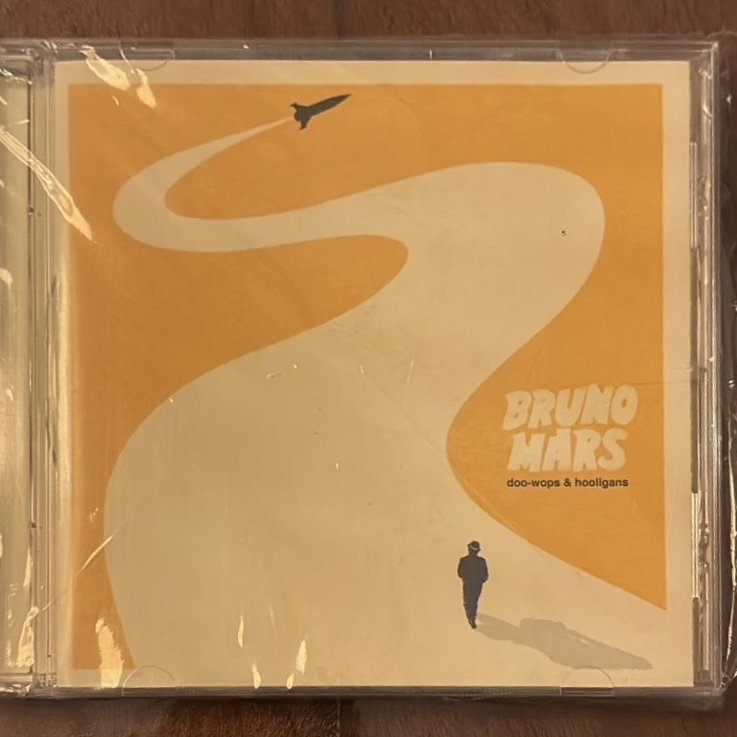

Doo-Wops & Hooligans

Artista: Bruno Mars
Año de edición: 2010
Descripción: Álbum debut de Bruno Mars que catapultó su carrera internacional con éxitos globales como "Just the Way You Are" y "Grenade", combinando pop, R&B y reggae.
Volver a la página principal